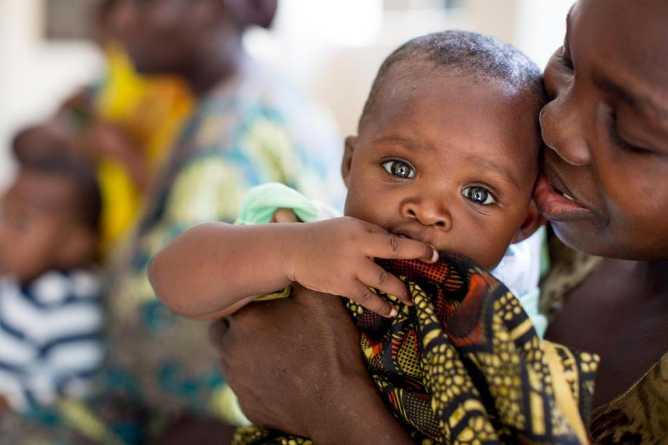

The Future of Africa - A look into the World's Highest Child Mortality Rate
By Chau Nguyen
Context: DECO3100 Data Visualization

Looking at child mortalirty over the years
Over the past few decades, we have achieved a huge accomplishment in sustaining human development - particularly in child mortality. The child mortality refers to the probability of death of a child under the age of 5. After the end of World War 2, the child mortality rate has been on a constant declining trend around the world. Governments worldwide as well as NGOs are actively taking actions to reduce the mortality rate, with a goal of reaching 0% mortality rate in the coming years. The graph below demonstrates the mortality rate over time from 1950 until now. As of the most recent IHME data 2017, we are currently at a rate of 40.6 deaths per 1000 births.
Despite the great advancement of public healthcare and technology, a mortality rate of 40.6 still poses as a huge loss to society. This figure translates roughly to 5.4 million deaths per year, or 15,000 young children everyday. The visualization below, based on IHME 2017 data, shows where children are most likely at risk of dying young.
Research conducted by IHME indicated that children born in Africa are more likely to be impacted by high mortality rate, especially in the Sub-Saharan regions (the areas that lie south of Sahara). These Central African countries have an average of 80 deaths per 1000 births, which doubles the current world mortality statistics.
What is happening in Africa?

Historically, Africa is a continent with very harsh envionrments, and there are many variables that may explain the high death rate: lack of healthcare infrastructure, hygiene and fresh water; multiple tropical dieases and illnesses, etc. However, when it comes to child mortality, there might be a more direct but often overlooked factor: breastfeeding statistics. For infants, the most nutritious food comes directly from the mothers' breastmilk. Breastfeeding has been highly recommended by experts as it provides subtances and antibodies to fight natural infections and build immunity. A study conducted by the Institute for Health Metrics and Evaluation at University of Washington looks into the prevalence of breastfeeding in Africa and found that in most African countries, the breastfeeding statistics is less than World Health Organization’s Global Nutrition Target of 50% prevalence. The visualization below shows the percentage of population that practice breastfeeding.
As demonstrated on the visualization, most countries in Africa have less than 50% breastfeeding rate. Countries located in Central Africa have the lowest breastfeeding statistics, particularly in Chad, Niger, Chabon, and Nigeria. When comparing these countries with their child mortality rate, there appears to be a correlation between these two statistics. In countries where breastfeeding practices are encouraged, the child mortality rates go lower compared to the countries where children are not breastfed. The graph below demonstrates this correlation.
For Africa to reduce the numbers of children dying, one solution could simply be to encourage breastfeeding practices. Evidently, there are many variables that contribute to child mortality rate, but it is still a good idea to get started with a practical and relevant solution. Unless there will be dramatic changes in politic and cultural agendas, it will take Africa 20 years to reach a child mortality rate of 0 - that is, the year 2040. This figure was collected by graphing the previous years mortalirty rates and taking into account the rate of decline annually.
The future often comes with a lot of uncertainty, but there is hope for African children. With reliable data and prediction for the future, governments and policy makers can implement initiatives that would provide resources and assistance for the most impacted regions, in hope that there will be a better future.
Source: